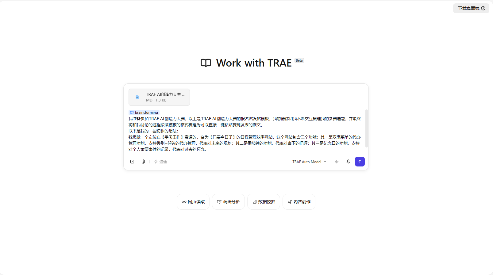
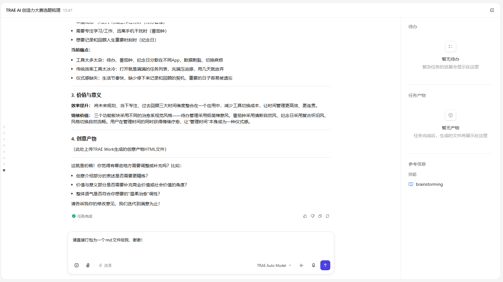
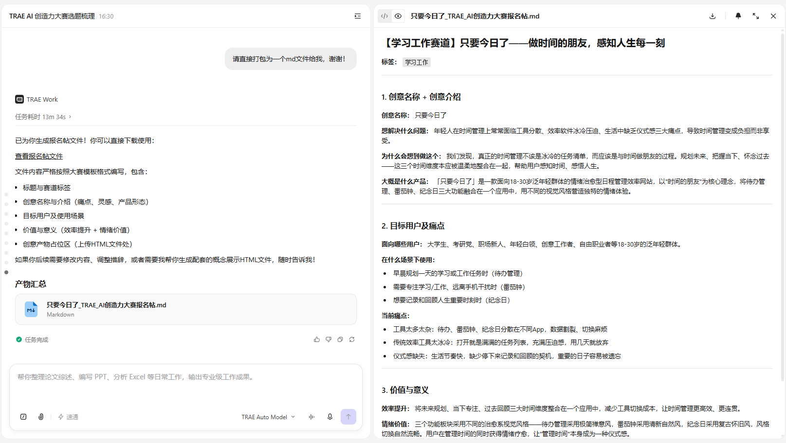
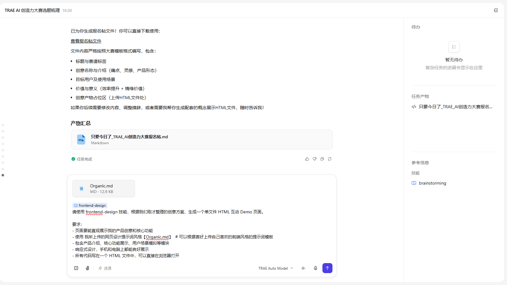
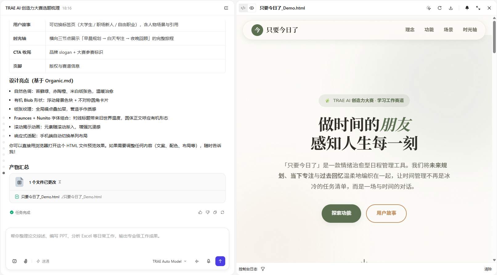

播种。种下你的灵感
sow.the.idea
安装技能
首次使用 TRAE Work，前往左上角的【技能模块】，在【技能市场】的【效率提升】分类中安装 brainstorming 技能
下载并上传报名模板
点击下方按钮下载模板，然后将大赛官方的报名发文模板 .md 文件拖入 TRAE Work 对话窗口，让 AI 理解输出格式要求
启用技能
在粘贴提示词之前，输入 /brainstorming 显式启用技能，召唤出 trae 宝 为你参谋灵感设计
粘贴提示词
复制下方提示词模板，填入你自己的灵感关键词后发送给 TRAE Work
" brainstorming 技能会激活 TRAE AI 的引导式发问功能，结合报名模板以提问和给出建议方案的方式，引导你逐步把灵感沉淀为标准的报名帖。 "— 灵感孵化舱 · 播种阶段
浇灌。多轮对话迭代
iterate.with.ai确认产品定位方向
TRAE Work 会先理解你的初始想法，然后给出 3 个清晰的方向选项（如"个人效率工具 / 情绪治愈型 / 两者兼顾"），并解释每个方向的差异。你只需 选择字母 即可完成回答，让 AI 帮你把模糊创意定位到具体方向。
选定视觉风格
AI 会推荐 4 种风格调性（如清新自然 / 温暖手账 / 极简禅意 / 复古怀旧），每种都附带详细的视觉特征描述。你可以直接选择，也可以像示例那样提出 "每个模块用不同风格" 的创新组合方案，TRAE Work 会主动呼应你的巧思。
确定目标用户
AI 会要求你从 多个候选用户群（学生 / 职场新人 / 创意工作者 / 泛年轻群体）中圈定最核心的服务对象。可以用 "A\B\C 包含在内的泛年轻群体" 这样的组合表达，让产品定位更精准。
痛点洞察（可多选）
AI 会抛出 5 个常见痛点（工具分散 / 效率工具冰冷 / 缺乏时间感知 / 焦虑感强 / 仪式感缺失），并说明 可以多选。挑选最贴合你产品的痛点，AI 会主动把答案与你的功能模块对应起来，验证你的设计逻辑。
提炼核心价值主张
AI 给出 3 句候选核心体验（如"时间的朋友 / 一站式治愈 / 活在当下"），帮你把前面的所有选择浓缩为一句 打动人的价值主张。这一句将直接出现在最终报名帖的"价值与意义"部分。
梳理创意亮点
AI 继续追问 差异化亮点 / 独特之处，比如"时光流转"式的视觉切换、"未来-当下-过去"的理念呼应等。这一步帮你把抽象概念落到 可被感知的具体场景，让评审一眼看到产品独特性。
生成最终报名帖
所有信息收集完毕后，TRAE Work 会 按报名模板格式 自动生成完整的报名帖文本（标题 + 标签 + 四大正文模块），你可以直接复制粘贴发布，无需自己排版。
" 在 TRAE Work 的引导下，根据 TRAE Work 的提问和提案做选择题并修正，直到初步打磨出一个灵感产品的雏形。 "— 灵感孵化舱 · 浇灌阶段
修剪。整理产品思路
shape.the.idea

拿到 TRAE Work 生成的报名帖后，可以从以下 6 个维度 与 AI 反复对齐，直到确认终稿。每个维度都对应一个可优化的角度，让你的产品报名帖更具说服力。
创意名称
简洁有力的名字，让人一眼就知道你要做什么
目标用户
精准定义你的核心用户群体和使用场景
产品形态
App / 小程序 / 网站 / 系统 / 硬件，选择最合适的载体
核心痛点
没有你的产品，用户现在会遇到什么不方便
价值与意义
从商业价值、效率提升、社会价值中选取角度论述
个性化
增加自想的其他内容，为报名帖注入独特的气质
" 确认方案满意后，一键导出 md 文件，报名所需材料完成 50%。 "— 灵感孵化舱 · 修剪阶段
绽放。生成你的作品
ship.the.demo
TRAE Work 调用技能时，推荐使用以下 5 个前端生成工具：TRAE 官方内置 2 个 前端技能 + GitHub 社区推荐的 2 个 设计技能 + 1 个风格化提示词模板网站，覆盖从模板调用、风格指引到组件生成的完整链路。
frontend-design OFFICIAL
TRAE 官方内置技能，专为生产级 Web App 打造，引导 AI 产出具备排版纪律与组件完整性的高质量前端方案。
frontend-skill OFFICIAL
TRAE 官方前端技能，承担通用页面、组件、布局等基础任务，是日常前端协作的万金油工具。
huashu-design GITHUB
花叔开源的 HTML 原生设计技能，集成 20+ 视觉哲学指南，专注高保真 App 原型、PPT、动画、信息图等视觉产出。
taste-skill GITHUB
Anti-Slop Frontend Framework，通过 DESIGN_VARIANCE / MOTION_INTENSITY / VISUAL_DENSITY 三大拨盘控制设计风格，让 AI 摆脱模板感。
DesignPrompts.dev TEMPLATE SITE
精选设计风格提示词模板库，覆盖 Monochrome / SaaS / Luxury / Cyberpunk / Brutalism / Organic 等 30+ 种风格，将模板直接喂给 AI 即可获得统一且具设计感的视觉输出。
" 当你的灵感经历播种、浇灌、修剪，最终以一份精美的报名帖和一个可交互的 Demo 呈现在社区面前时 —— 那一刻，就是绽放。 "— 灵感孵化舱 · 绽放阶段
报名帖文本
TRAE Work 按模板格式生成的结构化报名帖，包含创意介绍、目标用户、价值意义四大部分

HTML Demo 文件
使用 frontend-design 技能生成的互动展示页面，视觉精美，可直接上传至社区展示